Methods¶
In this page, we discuss the details of algorithms used in each server. This page is currently written in Japanese; see References section for the list of references for each algorithms.
Classifier & Regression¶
Overview¶
回帰問題は，入力 に対応する特徴ベクトル 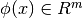 に対して，実数値の出力 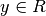 を当てる問題である． 今回実装したのは，線形回帰モデルである． 線形回帰モデルでは，パラメータ 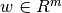 を利用して，入力 に対して 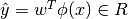 で予測する．
学習時には，分類問題同様，正解データセット 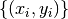 を利用して，正解データに対して正しく予測できるように重みベクトルを推定する． 典型的には1800年代に，予測値と実測値との自乗和を最小化させる最小二乗法が提案されている． この方法はバッチ処理になるため，今回の調査ではオンライン学習させる方法を利用した．
Passive Aggressive¶
Passive Aggressive (PA) [Crammer03a] [Crammer03b] [Crammer06] は，Support Vector Regression (SVR) のオンライン版であり，同名の分類器を回帰問題に適用したアルゴリズムである． PA は， (1) 現在の学習データが与えられた許容範囲 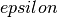 以下で予測する． (2) 分類問題の PA 同様，できる限り現在のパラメータと近い点を選ぶ，という二つの条件を満たすパラメータに更新する． すなわち， -intensive hinge loss 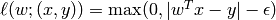 に対して，パラメータを 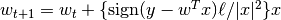 で逐次更新する．
さらに，大きく更新しすぎるのを防ぐために， PA-I 同様のコストを追加する．
オリジナルの PA-I では，  の代わりに 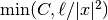 で更新するが，回帰問題では と のスケールに対して の調整が難しい．
そこで， の標準偏差 をオンラインで計測し， の値を調整する．
まず，予測値 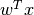 と 実測値 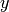 との差， 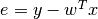 とする．
の平均と二乗の平均の予測値を， 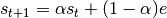 と 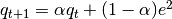 で更新する．
時刻 での標準偏差を 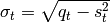 で予測する．
実際の更新幅は， 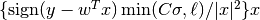 となる．
の代わりに 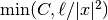 で更新するが，回帰問題では と のスケールに対して の調整が難しい．
そこで， の標準偏差 をオンラインで計測し， の値を調整する．
まず，予測値 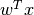 と 実測値 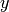 との差， 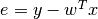 とする．
の平均と二乗の平均の予測値を， 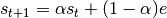 と 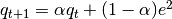 で更新する．
時刻 での標準偏差を 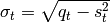 で予測する．
実際の更新幅は， 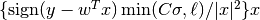 となる．
Iterative Parameter Mixture¶
分類問題同様，重みベクトルは Iterative Parameter Mixture [McDonald10] [Mann09] で混ぜ合わせる． これは，各マシンが単独で学習アルゴリズムを動かし，一定時間，あるいは決められた条件ごとに，すべてのマシンの重みを集めて，それらの平均を計算する． 平均ベクトルは再度全てのサーバーに配られて，それを初期値と思って学習を再開する．
もともと分類問題向けのモデル共有方法であるが，線形回帰モデルではモデルパラメータが同じ形をしているので，同様に分散学習させることができる可能性が高い．
References¶
- PA(PA, PA1, PA2): Passive Aggressive
[Crammer03a] Koby Crammer, Ofer Dekel, Shai Shalev-Shwartz and Yoram Singer, Online Passive-Aggressive Algorithms, Proceedings of the Sixteenth Annual Conference on Neural Information Processing Systems (NIPS), 2003. [Crammer03b] Koby Crammer and Yoram Singer. Ultraconservative online algorithms for multiclass problems. Journal of Machine Learning Research, 2003. [Crammer06] Koby Crammer, Ofer Dekel, Joseph Keshet, Shai Shalev-Shwartz, Yoram Singer, Online Passive-Aggressive Algorithms. Journal of Machine Learning Research, 2006. - CW: Confidence Weighted Learning
[Dredze08] Mark Dredze, Koby Crammer and Fernando Pereira, Confidence-Weighted Linear Classification, Proceedings of the 25th International Conference on Machine Learning (ICML), 2008 [Crammer08] Koby Crammer, Mark Dredze and Fernando Pereira, Exact Convex Confidence-Weighted Learning, Proceedings of the Twenty Second Annual Conference on Neural Information Processing Systems (NIPS), 2008 [Crammer09a] Koby Crammer, Mark Dredze and Alex Kulesza, Multi-Class Confidence Weighted Algorithms, Empirical Methods in Natural Language Processing (EMNLP), 2009 - AROW: Adaptive Regularization of Weight vectors
[Crammer09b] Koby Crammer, Alex Kulesza and Mark Dredze, Adaptive Regularization Of Weight Vectors, Advances in Neural Information Processing Systems, 2009 - NHERD: Normal Herd
[Crammer10] Koby Crammer and Daniel D. Lee, Learning via Gaussian Herding, Neural Information Processing Systems (NIPS), 2010. - Iterative Parameter Mixture
[McDonald10] Ryan McDonald, K. Hall and G. Mann, Distributed Training Strategies for the Structured Perceptron, North American Association for Computational Linguistics (NAACL), 2010. [Mann09] Gideon Mann, R. McDonald, M. Mohri, N. Silberman, and D. Walker, Efficient Large-Scale Distributed Training of Conditional Maximum Entropy Models, Neural Information Processing Systems (NIPS), 2009.
Recommender¶
Overview¶
レコメンダは，類似するデータを推薦したり，データ中の未知の属性を推定することによって推薦するためのモジュールである．
類似データの推薦操作であるsimilar_rowは，行をクエリとし，その行と類似する行を返す． 未知属性の推薦操作であるcomplete_rowは，行をクエリとし，その行の属性値を類似する行の情報を用いて推定する．
Data Representation¶
データはrowとcolumnからなる行列で表現される．各データはuniqueなidで紐付けられたrowデータで表される．各rowデータは，column名とそれに紐付く浮動小数点値からなる．但し，全てのcolumn値は指定されていなくても良い．row名，column名はあらかじめ全て指定されていなくても良い．
Similarity Calculation¶
rowデータはベクトルで表現され，ベクトル間の類似度はcos類似度，またはJaccard係数で計算される．
列ベクトル 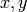 が与えられたとする．この時，cos類似度は 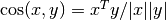 と定義される，但し はベクトル のノルムである．
Jaccard係数は 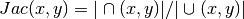 として計算される，但し， 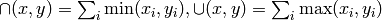 である．
なお，登録されていない空の値は として扱われる．
Algorithms¶
inverted_index¶
転置インデクスを利用したレコメンダである．転置インデクスは特徴ID毎にそれが発火した特徴データ集合を格納する．これにより類似度に影響がある特徴ID，データだけを列挙できるようになるので，クエリが疎である場合に高速化をはかることができる．
lsh¶
局所近傍ハッシュ (Locality Sensitive Hash, LSH) を利用したレコメンダである．データ毎にそのデータを表すビット列を計算して，ビット列を格納する．データ間のcos類似度は，ビット間のハミング距離から求められる類似度によって計算できる．
ベクトル に対し, 個のランダムなベクトル 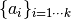 との内積をとり， 番目のベクトルとの内積値が正であれば， 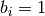 , そうでなければ 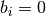 となるようなビットベクトルを作成する．このように作成されたビットベクトルを 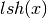 とする．また，２つのビットベクトル間 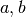 で一致したビット数を 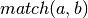 とする時，
 が成り立つ，但し，期待値はランダムなベクトル生成に関してとるとする．
が成り立つ，但し，期待値はランダムなベクトル生成に関してとるとする．
これにより，任意のベクトル間のcos類似度計算は，それらのベクトルから生成されたビットベクトル間のビット一致数により近似できる．元々のベクトルに比べ，ビットベクトルは小さくまた固定長であるため通信容量を大幅に削減することができる他，類似度計算を高速に実現することができる．
minhash¶
MinHashを利用したレコメンダである．各データ毎にそのデータを表すビット列を計算して，ビット列を格納する．データ間のJaccard係数は，ビット間のハミング距離から求められる類似度によって計算できる．
はじめに集合間に対するJaccard係数を説明し，これを実数ベクトル間に対するJaccard係数に拡張する．
前述のように，2つの集合 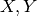 のJaccard係数を， 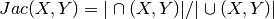 とする．MinHashは適当なハッシュ関数を利用し，集合中の各要素のハッシュ値を求め，その最小値を 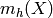 とした時， 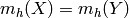 となる確率は 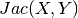 と一致することを利用し，このJaccard係数を推定する．複数のハッシュ関数を用意しそれらの間で一致した割合を求めると，それは に近づく．また，実際のハッシュ値を保持せずに，ハッシュ値の最下位のビットのみを記録したとしても，衝突分を差し引くことで，Jaccard係数を求めることができる [Ping2010] ．今回はこの方法を利用した．
次に各要素が正の実数値を持つ場合に拡張する と定義する．この時，各要素がその値の個数だけ存在するようなハッシュ関数を利用する必要がある．カラム名のハッシュ値を 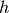 とした時， 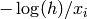 をこの要素のハッシュ値とする．このハッシュ値で計算された場合，minhash値は一致する．
euclid_lsh¶
ユークリッド距離のための局所近傍ハッシュを利用したレコメンダである．複数テーブルを用いた効率的な探索と，cos類似度の局所近傍ハッシュとユークリッドノルム値を用いたリランキングによってユークリッド空間における近傍探索を実現する．
ユークリッド空間における局所近傍ハッシュは [Datar2004] で提案されたものを用いる．cos類似度の局所近傍ハッシュと同様に 個のランダムなベクトルとの内積を取った後，それぞれを適当な幅 以下のランダムな量子化幅で整数値に量子化し，得られた 個の整数を 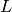 個に等分して，別々のハッシュテーブルに記録する．探索の際には同様に 個の整数を計算し， 個のハッシュテーブルから表引きを行う．実際には実装上の工夫 [Andoni2005] によりこの操作を単一のハッシュテーブルで実現する．また，小さな に対しても高い再現率を達成するために，各ハッシュ値が１だけ異なるようなエントリーも見るマルチプローブ探索 [Lv2007] を実装している．
[Datar2004] の手法では得られたデータと入力データとの間のユークリッド距離が得られない．そこでJubatusの実装では，最初に計算した 個の内積値を正負でビット化したもの（cos類似度のハッシュ値と同じもの）と元のベクトルのユークリッドノルムも保存しておく．cos類似度のハッシュを用いることで，表引きによって得られたデータ と入力データ 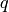 の間のcos類似度 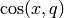 が推定できる．さらにそれぞれのユークリッドノルム 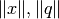 を用いると，これらの間のユークリッド距離は式 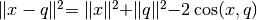 によって計算できる．こうして得られたユークリッド距離の推定値を用いて，表引きして得られたデータ集合をソートし直す．
ユークリッド距離は類似度ではなく距離であり，値が小さくなるほど近いという意味になる．対応する類似度に標準的なものがないため，Jubatusではユークリッド距離に 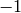 を掛けたものを類似度として用いる．
References¶
- minhash: b-Bit Minwise Hash
[Ping2010] Ping Li, Arnd Christian Konig, b-Bit Minwise Hashing, WWW, 2010 - euclid_lsh: Euclidean LSH
[Datar2004] (1, 2) Mayur Datar, Nicole Immorlica, Piotr Indyk, Vahab S. Mirokni, Locality-Sensitive Hashing Scheme Based on p-Stable Distributions, SCG, 2004. [Andoni2005] Alex Andoni, LSH Algorithm and Implementation (E2LSH), http://www.mit.edu/~andoni/LSH/ [Lv2007] Qin Lv, William Josephson, Zhe Wang, Moses Charikar, Kai Li, Multi-Probe LSH: Efficient Indexing for High-Dimensional Similarity Search, VLDB, 2007.
Storage¶
inverted_index_storage¶
転置インデクスを格納するインデクスである．inverted_indexで利用される．文字列生成のオーバーヘッドを削減するために内部では，カラムID文字列は整数IDに内部で変換され保存される．
bit_index_stroage¶
ビット列からなるデータ集合を格納するインデクスである．lshとmin_hashで利用される．ビット間の類似度計算部分はビット操作によって実現され高速である．
Data Distribution¶
recommenderでは全ての情報をストレージに格納する．
各データは，そのrow IDに従い，コンシステントハッシング(CHT)を用いて同じIDは必ず同じサーバーに振り分けられるようになっており，IDを含む全ての操作は同じサーバーで処理される．
各ストレージでは，サーバー固有である差分情報と，全サーバーで共有する部分に分けて情報を保持する．前者をdiff，後者をmixedとして以降表す．一般にmixedは全サーバーの情報を保持しているので，diffと比べて大きい．
update_row操作ではdiffのみを更新する．similar_row, complete_row操作では,diffとmixedの両方を参照して操作を行う.もし,diffに情報があるrowであれば，diffの方が情報が新しいのでdiffの情報を採用する．あるIDに関する情報はCHTを利用することで同じサーバーに必ず集められる．
mix操作時には各サーバーからdiffをあつめ,それらを合わせた上で，各サーバーに配り直し,mixedに更新として適用する.そしてdiffを空に初期化する操作を施す．diffを集め始めてから，各サーバーに配り直されるまでの間に各サーバーに施された変更は全て破棄される．この破棄分をバッファを２つ持つなどして対応することは今後の課題である．
inverted_index_storageではdiff, mixedは転置ファイルとなっており，bit_index_storageでは各row毎にbit列を保持する.